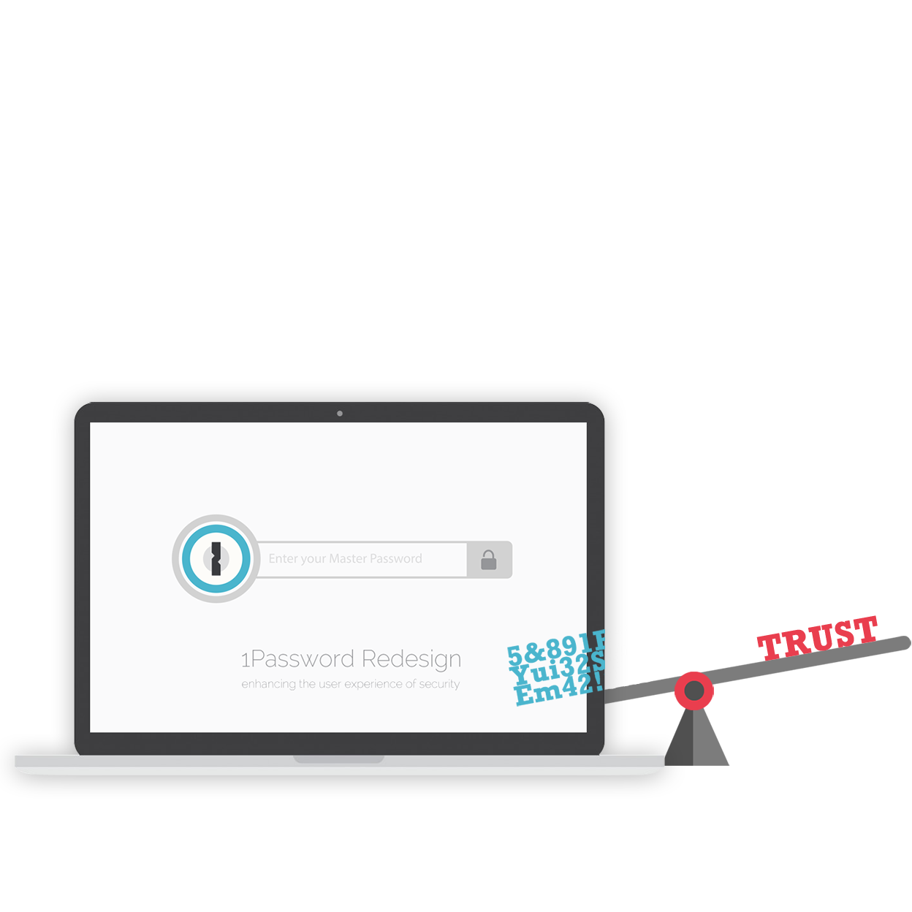
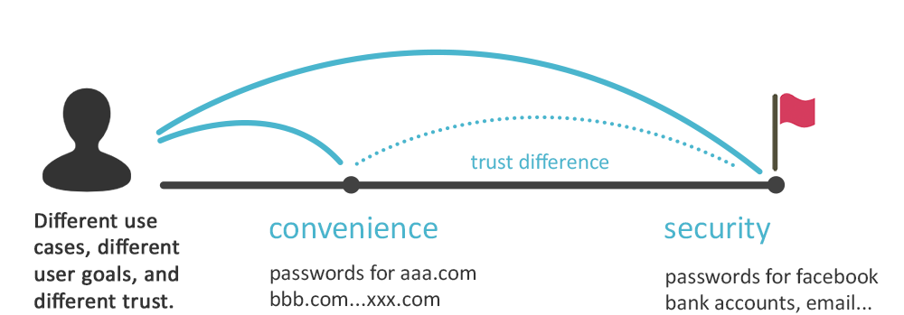

This is one of the Interaction Design Practice (IDP) class project in the HCI/d program at Indiana University. The design problem was to redesign the password generator in the 1Password App, to make user more comfortable to use auto-generated password.
We worked as a group of three, and I was mainly responsible for the primary research (interview), user experience analysis, wireframing and the final visual design of the prototype.

"My boyfriend installed this software for me on my computer for helping me remember so many different passwords. But I feel creazy about this. The software told me to change my password because it warned that the current password is not safe, but the procedure of changing password is not convenient at all”
“I tried to use 1Password because I think it’s a not bad technology to help people keep the different passwords. But I will not trust this software to take over my brain, I need also memorize my important passwords in case that I cannot use 1Password for example when I use a public computer.”
“I have used 1Password for 2 years, I think basically it’s worthy to buy this product. However the interface is not transparent enough, novice users may be not able to find things they want to find. And I do not use password generator because it’s impossible for me to remember those wired strings”
The security problem of passwords cannot get enough attention by the users, which means the product itself doesn’t well motivate users to strengthen their weak passwords by using the generator.
Even for user who want to strengthen their password, they would hardly consider the password generator because it’s not easy to find where it is and how to use it.
Using the password generator is not psychologically comfortable. The randomly generated passwords is so complicated that no one can remember. This will cause trust issue.
The flow of using a generator to change password is complicated, the password generator looks independent in the APP but not an integral part of the password-changing flow.
User use 1Password basically for 2 reasons (goals): convenience and security. For the users who have the purpose of security, they entrust 1Password much more than the user who mainly use it for convenience. There is a mental difference regarding trust in between the two reasons. On the other hand, we can categorize two kinds of use cases: unimportant accounts and important accounts, which respectively correspond to the two goals. Instead of hoping user to set their goal at the far end, it’s more viable to start from designing the service for the for-convenience use cases. And then gradually build up the user trust to ultimately get to the security goal.
-Develop new use case
Sometimes people care much about their passwords because they have important or private information in those accounts. Sometimes people don’t care about passwords but more about web content. The situation that passwords are not regarded important is also a design opportunity for 1Password.
-Make the original use case better
For the important passwords, our design solution helps user come up with meaningful ways to strengthen their password rather than randomly generate a messy code. One way to do this is add a string based on user's old password, so it's possible to memorize, thus user will be comfortable to use.
The desktop App as a window to look over all of the accounts and passwords, could play a more active role to prompt user to strengthen their password.
By taking advantage of the browser plug-in, password generator could call out at the right moment and right place autonomously.
1Password could help strengthen password by combining the old password and generated password in a way that user feel comfortable.
1. The security audot can notice user regarding the security related factors of their passwords. Users have option to not show these information.
2. The security level of each password should be presented in the list, so people will have a holistic view of their passwords’ security situations.
3. Set a “strengthen” button right beside the weak password, so people are more motivated to change their passwords. And the button could be directly linked to the site to change passwords.
It makes no sense for user to use the password generator that is hiden in the menu of 1Password, it should appear automatically when people need it. In this design, we take the clicking password text field as an event that triggers the password generator to pop up right beside the text field. On one hand people can use it more convenient, one the other hand this interaction will make user more conscious about the meaning of password generator, therefore enhance the value of 1Password in user’s mind.
Sometimes people may not really care about the security of some web account. They just want to have a smooth web experience, but the registeration seems like an obstacle that influence the accessibility and fluency of web experience. So we designed Flash Registeration as an optional functionality that help people go through the process of registeration in a very quick manner. The password is automatically generated when user clicks the flash button, then the account is created and saved in 1Password. This could just take less than 1 second.
Interview
Competitive Analysis
Affinity Diagram
Brainstorming
Cognitive Walkthrough
Ideation Sketch
Prototyping
Usability Test
Iteration
1Password project is the 2nd project of Interaction Design Practice (IDP) in Fall 2014.
I was in the team with Evan Tank and Nicole Guernsey.
Good user experience should consider every detailed scenarios and the potential.